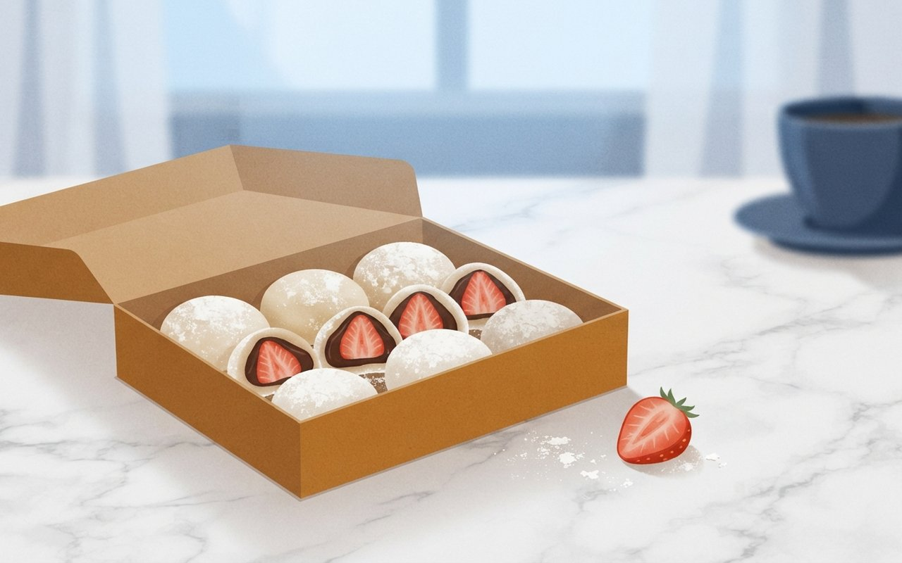
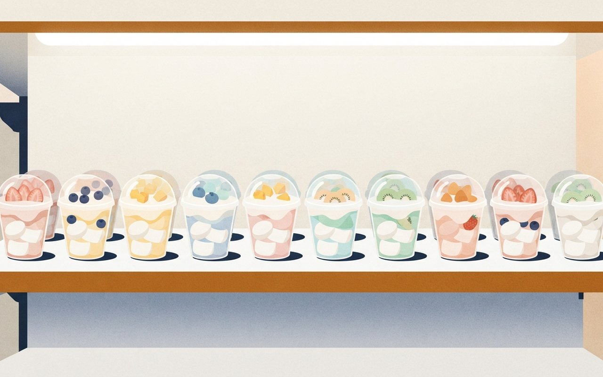
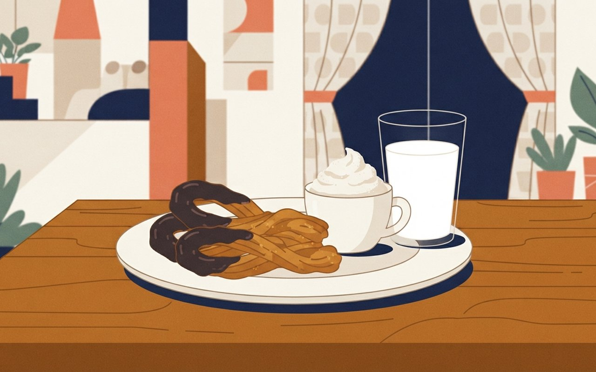
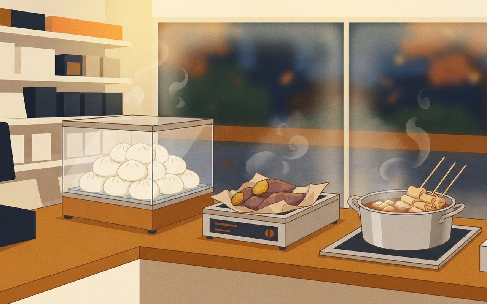
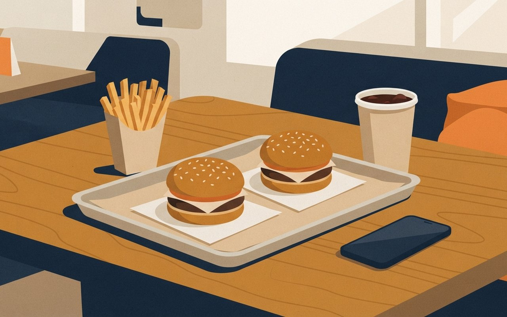

2026년 10월 22일 목요일 · 푸드 브리프7 Picks · SNS 화제 메뉴 4 · 신상·할인 2 · 트렌드 1
두바이 쫀득 쿠키 다음 주자는 '떡'입니다. 잠실 롯데월드몰에서는 하루 150개 한정 찹쌀떡을 사려고 새벽부터 줄이 서고, 편의점 떡 매출은 1년 새 GS25에서 9배 가까이로 뛰었습니다. 부산 떡집에서 시작된 피자설기, 숏폼을 타고 230만 개가 팔린 쫀득 츄러스까지 지금 SNS에서 뜨는 먹거리를 모았고, 이번 주말까지 쓸 수 있는 버거 할인과 오마카세 예약 흐름도 담았습니다. 이번 호에는 방송 뒤 웨이팅이 몰린 식당 가운데 기사로 가게 이름까지 확인된 곳이 없어 싣지 않았습니다.
🎧 듣기 · 약 2분
🎧 낭독 원고 보기
하루 150개만 파는 찹쌀떡을 사려고 새벽 4시부터 줄이 늘어섭니다. 10월 22일 목요일, 푸드 브리프입니다. 오늘은 지금 뜨는 먹거리 일곱 가지를 전해 드립니다.
먼저 잠실 롯데월드몰의 고디바 모찌입니다. 보도에 따르면 하루 150개 한정으로, 개당 7,500원에서 9,000원입니다. 줄은 이르면 새벽 4시에서 5시 사이에 시작되고, 당일 대기는 오전 6시쯤 마감됩니다. 받는 시각은 오전 10시 30분부터입니다.
떡 열풍은 숫자로도 보입니다. 올해 1월부터 9월까지 GS25 떡류 매출은 1년 전보다 778% 넘게 늘었고, CU는 96%, 세븐일레븐은 62% 늘었습니다. 부산 떡집에서 시작된 피자설기는 9월 SNS와 뉴스 언급이 1만 건을 넘었고, 집에서는 백설기에 토마토소스와 치즈를 올려 전자레인지에 2분 돌리면 됩니다.
파리바게뜨 초코 쫀득 츄러스는 9월 2일 나온 뒤 숏폼 영상을 타고 한 달여 만인 10월 초까지 230만 개가 팔렸습니다. 매장마다 직접 주문하는 방식이라 품절 시점은 매장마다 다릅니다.
편의점에는 겨울 간식이 일찍 나왔습니다. 10월 첫 주 세븐일레븐 어묵 매출은 직전 주보다 168% 늘었습니다. 버거 쪽은 노브랜드 버거 신메뉴가 단품 4,900원이고, 맘스터치는 이번 일요일까지 앱에서 세트 3,500원 할인을 줍니다. 마지막으로 캐치테이블에 따르면 올해 1월부터 8월까지 스시 오마카세 예약은 2021년 같은 기간의 3.9배로 가장 많았습니다.
지금까지 10월 22일 푸드 브리프였습니다. 한정 수량과 행사 조건은 바뀔 수 있으니 방문 전 매장 안내를 확인해 주세요. 맛있는 하루 보내세요.
SNS — 지금 뜨는 메뉴
餠
떡픈런
새벽 4시부터 줄 서는 찹쌀떡 — 잠실 롯데월드몰 고디바 모찌, 하루 150개 한정·개당 7,500~9,000원
초콜릿 브랜드 고디바가 서울 송파구 롯데월드몰점에서만 파는 과일·초코 찹쌀떡(모찌)을 사려는 '떡픈런'(떡+오픈런)이 이어지고 있다. 보도에 따르면 하루 150개 한정이고, 값은 종류에 따라 개당 7,500~9,000원이다(헤럴드경제·서울경제·뉴스웍스). 고디바 측은 판매량을 공식적으로 밝히지 않았다(한국경제).
줄은 이르면 새벽 4~5시에 시작되고 당일 대기는 오전 6시께 마감되며, 상품은 오전 10시 30분부터 받는다(한국경제·서울경제). 다만 헤럴드경제 기자가 14일 오전 6시에 갔을 때는 줄이 100m가 넘었고, 맨 앞 사람은 전날 오후 9시(21시)부터 기다렸다고 한다. 같은 몰의 노티드도 20일 개당 5,500원짜리 도넛 찹쌀떡 7종을 내놓자 첫날 대기 줄이 생겼다(한국경제).
어디서서울 송파구 롯데월드몰 지하 1층 고디바 — 이 매장 한정 판매
수량·가격하루 150개(보도 기준) · 개당 7,500~9,000원 ⚠ 변동 가능
시간줄 새벽 4~5시 시작 · 대기 오전 6시께 마감 · 수령 오전 10시 30분부터 ⚠ 방문 전 확인
같은 몰노티드 도넛 찹쌀떡 7종 · 10월 20일 출시 · 개당 5,500원 (한국경제 단일)
🍜 알고 보면 달라지는 것
수량이 정해진 한정 판매라 '몇 시에 가면 살 수 있나'가 관건이다. 보도대로라면 대기 등록이 오전 6시께 끝나기 때문에, 매장이 문을 여는 시각에 맞춰 가면 이미 늦다. 웃돈을 붙인 되팔기 글도 보이지만, 고디바가 다른 점포로 판매 확대를 검토 중이라는 보도(서울경제)도 함께 볼 만하다.
헤럴드경제 — 새벽 줄 현장한국경제 — 가격·대기 마감서울경제 — 150개·수령 시각한국경제 — 노티드 찹쌀떡뉴스웍스 — 매장·가격하루 150개는 헤럴드경제(10/14 12:01)·서울경제(10/16 06:14)·뉴스웍스(10/19 18:23) 일치, 한국경제(10/14 07:00)는 "판매량 비공개" · 7,500~9,000원은 한국경제·뉴스웍스·아이뉴스24 일치 · 새벽 4~5시·6시께 마감·10시 30분 수령은 한국경제·서울경제 일치(뉴스웍스 사진 설명은 '10시경 마감'으로 달라 시각은 ⚠) · 노티드는 한국경제(10/22 09:32) 단일 · 되팔기 가격은 싣지 않음 (확인 2026-10-22)
새벽 4시부터 줄, 잠실 '떡픈런'
롯데월드몰 고디바 찹쌀떡은 하루 150개 한정에 개당 7,500~9,000원이에요. 줄은 새벽 4~5시에 시작돼 오전 6시께 마감돼요.
서울 송파
150개|하루 한정(보도 기준)
A small elegant dessert box opened on a marble table, holding several round soft Korean rice cakes dusted with flour, some with fresh strawberry and chocolate fillings visible, early morning blue light through a window, calm mood, no people, no text, no logos, no brand packaging

糕
편의점 떡
두쫀쿠 다음은 떡 — 편의점 떡류 매출 1년 새 급증, GS25는 778.8% 늘어
올해 1~9월 편의점 떡류 매출은 1년 전보다 GS25가 778.8%, CU가 96.5%, 세븐일레븐이 62% 늘었다. 디저트 관련 매출도 세븐일레븐 67%, GS25 42.5%, CU 37.6% 늘었다(뉴시스). 한국농촌경제연구원이 국가데이터처 가계동향조사를 분석한 결과 2분기 가계 떡 지출도 10.6% 늘었다.
국가데이터처 기준 떡류 판매액은 2018년 5,641억 원에서 2025년 9,624억 원으로 70.6% 커졌다(헤럴드경제). 편의점 찹쌀떡 상품 가운데는 누적 판매가 9월 20일 50만 개, 10월 초 70만 개, 10월 중순 100만 개를 넘긴 제품도 있다(회사 집계, 파이낸셜뉴스·헤럴드경제·뉴시스).
편의점 떡류2026년 1~9월 · 1년 전 대비 GS25 +778.8% · CU +96.5% · 세븐일레븐 +62% (뉴시스 단일)
디저트 관련세븐일레븐 +67% · GS25 +42.5% · CU +37.6%
떡류 판매액2018년 5,641억 원 → 2025년 9,624억 원(7년 새 +70.6%, 국가데이터처)
가계 떡 지출2분기 +10.6% (한국농촌경제연구원, 가계동향조사 분석)
🍜 알고 보면 달라지는 것
778.8%는 증가율이라, 기사에 매출액이 없는 만큼 세 회사 중 누가 떡을 가장 많이 파는지는 알 수 없다. GS25와 CU는 떡 매출이 디저트 관련 매출보다 훨씬 빠르게 늘었고, 세븐일레븐은 떡(62%)과 디저트(67%)가 비슷하게 늘었다. 두쫀쿠처럼 쫀득한 식감을 찾는 유행이 떡으로 옮겨 간 흐름으로 읽힌다.
뉴시스 — 편의점 떡 매출헤럴드경제 — 떡류 판매액파이낸셜뉴스 — 누적 50만 개편의점 3사 떡류·디저트 증가율과 가계 떡 지출 10.6%는 뉴시스(10/16 15:00) 단일 · 떡류 판매액 70.6%는 헤럴드경제(10/11 09:03) · 찹쌀떡 상품 누적 50만(파이낸셜뉴스 9/26)→70만(헤럴드경제 10/11)→100만(뉴시스 10/16)은 회사 집계 · 특정 상품명은 홍보로 보이지 않게 뺐다 (확인 2026-10-22)
두쫀쿠 다음은 떡, 편의점 떡 매출 급증
올해 1~9월 편의점 떡류 매출이 1년 전보다 GS25는 778.8%, CU는 96.5% 늘었어요. 떡류 판매액도 7년 새 70.6% 커졌어요.
70.6%|떡류 판매액 7년 증가
A neat row of colorful Korean rice cake desserts in clear plastic cups on a bright convenience store shelf, white rice cakes topped with yogurt cream and fruit, pastel colors, clean modern lighting, no people, no text, no logos, no price tags, no brand packaging

雪
피자설기
부산 떡집에서 시작된 '피자설기' — SNS 언급 4월 100건 미만 → 9월 1만 건대, 집에선 전자레인지 2분
백설기 위에 토마토소스와 치즈를 올린 '피자설기'가 SNS에서 퍼졌다. 원조로 알려진 곳은 부산 남항시장의 영도다리떡방으로, 1999년 문을 연 떡집에 2세가 합류한 뒤 만든 메뉴다(한국경제). 썸트렌드 집계로 인스타그램·블로그·뉴스 언급량은 4월까지 100건 미만이었다가 8월 2,554건, 9월 1만1,600건으로 늘었다(한국경제 9월 30일, 언급량은 9월까지 집계).
집에서는 백설기에 토마토소스와 피자치즈를 올려 전자레인지에 약 2분 돌리는 레시피가 공유됐다. CU는 10월 8일부터 3,800원짜리 '피자절편'을 상시 판매한다(회사 발표, 한국경제 10월 6일).
원조영도다리떡방 · 부산 남항시장 · 1999년 개업 (한국경제)
언급량4월까지 100건 미만 → 8월 2,554건 → 9월 1만1,600건 (썸트렌드, 인스타그램·블로그·뉴스)
홈 레시피백설기 + 토마토소스 + 피자치즈 → 전자레인지 약 2분
편의점CU 피자절편 3,800원 · 10월 8일부터 상시 판매 (회사 발표) ⚠ 변동 가능
🍜 알고 보면 달라지는 것
언급량이 가장 크게 뛴 건 8~9월이라, 지금은 '처음 뜨는 중'보다 '집과 편의점으로 퍼지는 중'에 가깝다. 원조 떡집을 찾아가지 않아도 백설기 한 덩이와 피자 재료로 바로 따라 할 수 있다는 점이 퍼진 이유로 꼽힌다. 원조 가게의 가격·판매량은 기사로 확인되지 않아 싣지 않았다.
한국경제 — 원조 떡집·언급량한국경제 — CU 피자절편원조·언급량·레시피는 한국경제(9/30 21:22) · 같은 언급량을 한국경제 10/6(16:53)은 "8월 2,000여 건, 9월 1만 건 이상"으로 적어 카드에는 9/30 기사 값을 썼다 · CU 가격·판매일은 회사 발표 · 원조 떡집 가격·판매량과 구(區) 단위 위치는 미확인 · 9월 정점이라 날짜 최신성은 '확산 중' 맥락으로만 (확인 2026-10-22)
부산 떡집 피자설기, 집에선 전자레인지로
백설기에 토마토소스와 치즈를 올린 피자설기의 SNS 언급이 9월 1만1,600건으로 늘었어요. 집에선 전자레인지에 2분이면 돼요.
부산
2분|전자레인지 홈 레시피
A square slice of white Korean rice cake topped with melted mozzarella cheese and tomato sauce on a small plate, a microwave door open in a cozy home kitchen behind it, warm evening light, no people, no text, no logos
甛
숏폼 디저트
숏폼 타고 한 달여 만에 230만 개 — 파리바게뜨 '초코 쫀득 츄러스', 매장마다 품절 시점 달라
파리바게뜨가 9월 2일 내놓은 '초코 쫀득 츄러스'의 누적 판매가 10월 6일 기준 230만 개를 넘었다(회사 집계, 한국경제). 10월 2일 170만 개, 5일 220만 개 이상으로 빠르게 늘었다(세계일보). 관련 숏폼 영상 조회수가 100만 회를 넘었고, 생크림이나 우유를 곁들이는 조합이 공유됐다(한국경제).
파리바게뜨 측은 본사가 판매량을 제한하지 않고 각 점포가 직접 발주한다고 밝혔다(세계일보). 그래서 매장마다 품절 시점이 다르다. 가격은 2,900원이다(한국경제).
출시2026년 9월 2일 · 파리바게뜨
누적 판매10월 2일 170만 개 → 5일 220만 개 이상 → 6일 230만 개 (회사 집계)
가격2,900원 (한국경제 단일) ⚠ 변동 가능
구매 팁점포별 발주라 품절 시점이 매장마다 다름 · 숏폼 조합: 생크림·우유
🍜 알고 보면 달라지는 것
한정판처럼 보이지만 본사 수량 제한은 없다. 품절은 점포가 발주한 양이 다 팔린 것이라, 한 매장에서 없으면 다른 매장에는 남아 있을 수 있다. 숫자는 모두 회사 집계여서, 판매 속도는 업계 전체 비교보다 이 제품의 흐름으로 보는 게 맞다.
한국경제 — 230만 개·숏폼세계일보 — 누적 판매·점포 발주9월 2일 출시·170만·220만 개 이상·점포 발주는 세계일보(10/7 06:00) · 230만 개(10/6 기준)·숏폼 100만 회·가격은 한국경제(10/8 07:00) · 누적 판매는 두 매체 모두 회사 집계 · "2초에 1개꼴"은 기자 계산이라 뺐다 · 가격은 단일 출처 (확인 2026-10-22)
쫀득 츄러스, 숏폼 타고 품절 행진
파리바게뜨 초코 쫀득 츄러스가 출시 한 달여 만인 10월 6일 기준 230만 개 팔렸어요. 점포마다 직접 발주해서 품절 시점이 매장마다 달라요.
230만 개|출시 한 달여 누적
Several twisted chocolate-coated churros on a white plate with a small cup of whipped cream and a glass of milk beside them, cozy bakery cafe table, soft afternoon light, no people, no text, no logos, no brand packaging

New — 편의점·버거 신상과 할인
冬
겨울 간식
이른 추위에 편의점 겨울 간식 조기 등판 — 10월 첫 주 어묵 168%↑, GS25 호빵은 75.2%↑
이른 추위에 편의점들이 군고구마·어묵·호빵을 작년보다 일찍 내놨다. 10월 1~7일 매출을 직전 주와 비교하면 세븐일레븐은 어묵이 168%, 군고구마가 86% 늘었고, CU는 핫브레드가 133.2%, 군고구마가 56.1% 늘었다(파이낸셜뉴스). 이마트24는 겨울 간식 판매를 작년보다 약 한 달, GS25는 약 2주 앞당겼다.
GS25는 15~19일 호빵 매출이 직전 주 같은 요일보다 75.2% 늘자 21일 캐릭터 호빵 2종을 내놨다. 개당 1,900원, 3입 묶음 5,700원이고, 31일까지 GS Pay로 결제하면 묶음 상품이 1+1이다(아이뉴스24·포인트경제).
10월 1~7일직전 주 대비 매출 · 세븐일레븐 어묵 +168% · 군고구마 +86% / CU 핫브레드 +133.2% · 군고구마 +56.1%
여기 나온 증가율은 업체마다 기준이 다르다. 세븐일레븐·CU는 10월 1~7일을 직전 주와, GS25는 15~19일을 직전 주 같은 요일과 비교했다. 숫자 크기로 업체끼리 순위를 매기기보다 '추위가 오면 따뜻한 간식이 한 주 만에 두세 배로 팔린다'는 흐름으로 읽는 게 맞다.
A cozy Korean convenience store counter on a chilly autumn evening, a glass steamer case filled with plain white steamed buns, roasted sweet potatoes in a small warmer, fish cake skewers in a pot of broth, warm yellow light, fogged window, no people, no text, no logos, no brand packaging

食
버거 앱 쿠폰
이번 주 버거 신메뉴·할인 — 노브랜드 단품 4,900원·앱 무료 사이드(~28일), 맘스터치 앱 3,500원 할인(~25일)
신세계푸드의 노브랜드 버거는 15일 대표 버거 신메뉴 'NBB 훅'·'NBB 펀치'를 단품 4,900원에 내놨다(파이낸셜뉴스·뉴스1). 회사 발표에 따르면 28일까지 앱에서 신메뉴 단품을 사면 감자튀김과 음료를 무료로 주고(파이낸셜뉴스), 출시 1주 만에 10만 개 넘게 팔렸다(파이낸셜뉴스 22일).
맘스터치는 22일 중식 소스를 쓴 '후덕죽 셰프 컬렉션' 2차 메뉴 4종(버거 3종·치킨 1종)을 내놨다. 25일까지 공식 앱에서 하루 선착순 5,000명에게 '쿵파오싸이버거+XO사천빅싸이순살+콜라' 세트 3,500원 할인 쿠폰을 준다(뉴스핌·한국경제). 개별 메뉴 가격은 두 기사에 없어 적지 않았다.
노브랜드 버거NBB 훅·펀치 · 10월 15일 출시 · 단품 4,900원 ⚠ 변동 가능
노브랜드 앱 행사~10월 28일(수) · 신메뉴 단품 구매 시 감자튀김·음료 무료 (회사 발표)
맘스터치후덕죽 셰프 컬렉션 2차 · 10월 22일 출시 · 버거 3종 + 치킨 1종 · 가격 기사에 없음
맘스터치 앱 쿠폰~10월 25일(일) · 하루 선착순 5,000명 · 세트 3,500원 할인 ⚠ 조건은 앱 확인
🍜 알고 보면 달라지는 것
두 행사 모두 매장 계산대가 아니라 앱 주문에서만 적용된다. 노브랜드는 단품(4,900원)을 사면 감자튀김과 음료가 따라오는 방식이라 세트 구성과 조건을 앱에서 비교해 보면 좋고, 맘스터치는 하루 인원이 정해진 선착순이라 일찍 열어 볼수록 유리하다.
파이낸셜뉴스 — 노브랜드 신메뉴·앱 행사뉴스핌 — 맘스터치 쿠폰뉴스1 — 단품 4,900원파이낸셜뉴스 — 1주 10만 개한국경제 — 맘스터치 2차 메뉴노브랜드 단품 4,900원은 파이낸셜뉴스(10/14 18:26)·뉴스1(10/15 16:18) 일치 · 10월 15일 출시는 파이낸셜뉴스(10/14·10/22) · 앱 행사 기간은 회사 발표를 전한 파이낸셜뉴스 단일 · 세트 가격은 단일 출처라 뺐다 · 1주 10만 개는 회사 발표(파이낸셜뉴스 10/22 09:56) · 맘스터치 메뉴 구성·쿠폰(~10/25·일 5,000명·3,500원)은 뉴스핌(10/22 08:15)·한국경제(10/22 09:30) 일치 · 두 회사 신메뉴를 묶어 할인 조건 위주로만 정리 (확인 2026-10-22)
이번 주 버거 할인, 앱에서 챙기기
노브랜드 버거 신메뉴는 단품 4,900원이고 28일까지 앱에서 사이드를 무료로 줘요. 맘스터치는 25일까지 앱 세트 3,500원 할인이에요.
~10/25
4,900원|노브랜드 신메뉴 단품
Two generic homemade-style burgers with sesame buns on a simple paper-lined tray, a cone of golden french fries and a paper cup of cola, a smartphone lying face down beside the tray, bright casual diner table, no people, no text, no logos, no brand packaging

Trend — 외식 트렌드
鮨
오마카세 예약
한물간 줄 알았던 스시 오마카세, 예약 역대 최다 — 3~5만 원대와 15만 원 이상이 함께 늘었다
식당 예약 앱 캐치테이블이 2020년부터 2026년 8월까지 스시 오마카세 예약을 분석한 결과, 올해 1~8월 예약은 2021년 같은 기간의 3.9배로 가장 많았다. 연간 증가율은 2022년 120.2%, 2023년 24.7%에서 2024년 0.4%로 정체됐다가 다시 늘었다(스포츠경향·서울경제).
올해 1~8월 예약은 1년 전보다 3~5만 원대가 14.4%, 15만 원 이상이 18% 늘어 가격대가 양쪽으로 갈렸다. 3~5만 원대 비중은 2022년 1.9%에서 2026년 16.8%로 커졌고(스포츠경향), 가장 많은 가격대는 여전히 5~10만 원대(51.9%)다. 2025년 기준 1년 안에 다시 예약한 비율은 49.1%였다.
데이터캐치테이블 스시 오마카세 예약 · 2020년~2026년 8월 · 한 플랫폼 기준(시장 전체 아님)
규모2026년 1~8월 = 2021년 같은 기간의 3.9배 · 연간 증가율 2022년 120.2% → 2023년 24.7% → 2024년 0.4%
가격대1년 전 대비 3~5만 원대 +14.4% · 15만 원 이상 +18% · 5~10만 원대 비중 51.9%
오마카세가 다시 늘었다고 해서 같은 손님이 같은 가게로 돌아온 것은 아니다. 3~5만 원대 실속형이 새로 손님을 끌고, 특별한 날에는 15만 원 이상을 고르는 식으로 쓰임새가 나뉘었다. 예약할 때는 가격대마다 코스 구성이 크게 다르니 포함 메뉴를 먼저 확인하는 게 좋다.
스포츠경향 — 오마카세 예약 분석서울경제 — 가격대 양극화3.9배·연간 증가율·가격대별 증가율은 스포츠경향(10/21 00:24)·서울경제(10/20 15:08) 일치 · 3~5만 원대 비중(1.9%→16.8%)·51.9%·재예약률은 스포츠경향 단일 · 2025년 연간 증가율은 기사에 없음 · 특정 가게 이름은 싣지 않음 (확인 2026-10-22)
스시 오마카세 예약, 올해 역대 최다
올해 1~8월 오마카세 예약이 2021년 같은 기간의 3.9배로 가장 많았어요. 3~5만 원대와 15만 원 이상이 함께 늘었어요.
15만 원 이상:18|3~5만 원대:14.4
3.9배|2021년 같은 기간 대비
An empty minimalist Japanese-style sushi counter made of light hinoki wood, a few pieces of nigiri sushi on a small ceramic plate, a tiny dish of pickled ginger and a cup of green tea, soft warm spotlights, calm evening mood, no people, no hands, no text, no logos